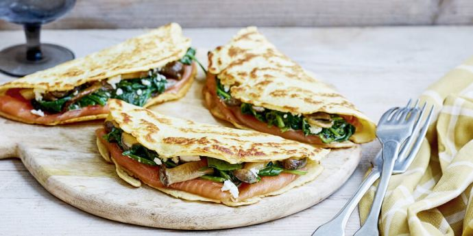

QUESADILLA MET GEROOKTE ZALM

Ingredienten
- 4 wraps
- 100 gr (warm)gerookte zalm
- 100 gr geroosterde paprika
- 4 el kruidenroomkaas
- 2 bosuitjes
- verse peterselie
- parmezaanse kaas
Bereiding
- Wij hebben voor dit recept warm gerookte zalm gebruikt, maar je kunt ook gewone gerookte zalm gebruiken. Net wat je kunt vinden of wat je in huis hebt. Snijd de zalm en de paprika in stukjes en de bosuitjes in dunne ringetjes.
- Smeer twee de wraps in met een laagje kruidenroomkaas. Verdeel dan wat zalm, bosui en paprika over de wraps. Strooi wat geraspte parmezaanse kaas erover en leg dan de twee andere wraps erboven op.
- Giet een klein scheutje olie in een koekenpan en bak de wrap aan beide kanten goudbruin en krokant, ongeveer 3-4 minuten per kant. Snijd de quesadilla in puntjes en serveer eventueel nog met een lekker dipsausje.
- Wil je snel een simpel dipsausje maken? Meng in een schaaltje 2 eetlepels mayonaise, 2 eetlepels zure room, 1 theelepel citroen/limoensap, halve theelepel paprikapoeder, kwart theelepel knoflookpoeder, snuf zout, peper en lekker wat verse fijngesneden dille.